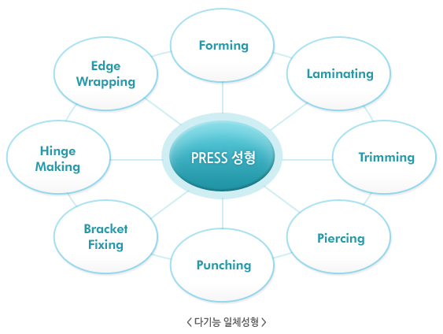
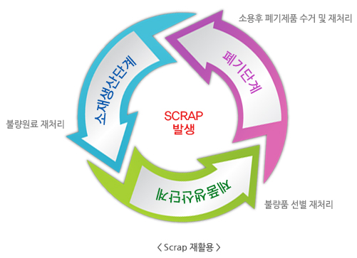

| 항 목 | 시험방법 | 단 위 | P.P | NPS |
|---|---|---|---|---|
| 밀 도 | ASTM - 792 | g/㎤ | 0.9 | 1.0 ~ 1.15 |
| 인장 강도 | ASTM - 638 | Kg/㎠ | 340 | 150 ~ 400 |
| 굴곡 강도 | ASTM - 790 | Kg/㎠ | 400 | 350 ~ 600 |
| 굴곡 탄성율 | ASTM - 790 | Kg/㎠ | 15,500 | 20,000 ~ 45,000 |
| 성형 수축율 | - | % | 1.5∼2.0 | 0.4 ∼ 1.2 |
| 융 점 | ASTM - 3418 | ℃ | 160 | 162 |
| 비 열 | - | Kcal/Kg℃ | 0.46 | 0.29 |


이미지 자료의 텍스트
원본 도해와 함께 읽을 수 있는 Figma 수록 문구입니다.
물성특성
물성품질우수 : 저흡수율 - 0.5%수준
고 강 성 • 굴곡강도 450kgf/㎠, 굴곡탄성율 3,500Mpa
• 용도별 다양성 : 물 성 - PP/목분 함량 조정( 용도별 물성 Flexibility)
두께 - 최소 0.8mm ~ 최대 5.0mm 생산가능(천연섬유의 종류 및 함량에 따라 차이 있음)
성형특성
다기능 일체성형 : Forming, Trimming, 표피재 접착,Punching 동시성형
• 후공정 단축 : 끝단 절곡, Center Cloth, Undercut형상 등 일체성형
. 환경 특성
100% Recycling : 소재생산 및 성형시 발생 Scrap 전량 회수 재활용
폐차시 발생 Scrap 재활용기술 개발
<다기능 일체성형>
PRESS 성형
Forming
Laminating
Trimming
Piercing
Punching
Bracket Fixing
Hinge Making
Edge Wrapping
< Scrap 재활용 >
소재생산단계
불량원료 재처리
SCRAP 발생
불량품 선별 재처리
폐기단계
사용후 폐기제품 수거 및 재처리